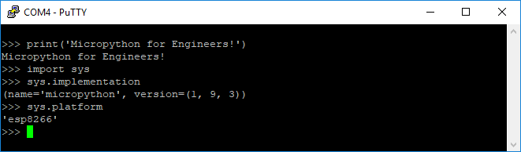

This is the third part of a multipart series on Micropython. In last post of the series, we installed Micropython on an Adafruit Feather Huzzah ESP8266 microcontroller using Python and a package called esptool. In this post, we are going to write commands to the Micropython REPL (the Micropython prompt) to turn on and off an LED connected to the Feather Huzzah board. The posts in this series:
- What is Micropython?
- Installing Micropython on an Adafruit Feather Huzzah ESP8266
- Blink an LED on an Adafruit Feather Huzzah ESP8266 using Micropython (This post)
- Read the temperature from a MCP9808 breakout board using Micropyton
- Use Micropython to connect an Adafruit Feather Huzzah to a WiFi network
- Upload Micropython code to turn an Adafruit Feather Huzzah into a WiFi-enabled IoT weather station
Before you can use the Micropython REPL (the Microython prompt) running on the Adafruit Feather Huzzah ESP8266, Micropython needs to be installed on the board and Putty needs to be installed to communicate with the board over serial. See the previous post on how to install Micropython on the board and install Putty on a Windows 10 machine.
Summary of Steps:
- Connect the Adafruit Feather Huzzah ESP8266 using a USB cable
- Determine which COM port the board is connected to using the Windows Device Manager
- Open Putty and connect to the board at 115200 baud
- Run commands at the prompt to turn the builtin LED on the Adafruit Feather Huzzah ESP8266 on and off
1. Connect the Adafruit Feather Huzzah ESP8266 board to the laptop
Use a microUSB cable to connect the Feather Huzzah to the computer. Make sure that the microUSB cable is a full USB data cable and not just a simple power cable. The first cable I tried was just a charging mobile phones and I couldn't figure out why Putty wasn't working. Switching out the cable was all it took to get it to work.
2. Determine which serial port the Feather Huzzah is connected to
Use Windows Device Manager to determine which serial port the Feather Huzzah is connected to. On my Windows 10 laptop, it usually comes up as COM4. You can find the serial port by looking in the Ports (COM & LPT) category of the Windows Device Manager. Look for something like Silicon Labs CP210x USB to UART Bridge (COM4) in the Ports (COM & LPT) menu. It is the COM# that you are looking for.


3. Use Putty to connect to the Feather Huzzah
Ensure the Feather Huzzah board is connected with a USB cable, then connect to it with Putty using the proper serial port (COM#) and 115200 baud. Remember to use the Serial radio button under Connection Type: to select serial communication or you will be trying to communicate with the Feather Huzzah over SSH which won't work.


This should bring up the Micropython REPL prompt >>>. If you can't see the >>> prompt, try typing [Enter], Ctrl-D, pushing the RESET button on the Feather Huzzah or unplugging then replugging the USB cable.

4. Run commands at the prompt to turn the built-in LED on the Adafruit Feather Huzzah ESP8266 on and off
At the micropython REPL (the Micropython command promt >>>) try the following commands:
>>> print('Micropython for Engineers!')
Micropython for Engineers
If we import the sys module, we can see the Micropython implementation and platform.
>>> import sys
>>> sys.implementation
(name='micropython', version=(1, 9, 3))
>>> sys.platform
'esp8266'

If you see similar output, that means Micropython is working on the Feather Huzzah. We can also view the flash memory size of our Feather Huzzah and the size of the Micropyton firmware we installed. Try this at the Micropython prompt:
>>> import port_diag

We can see the flash memory size is 4 MB. Below the label Firmware checksum: we can see a line for size: 600872. This means the size of our Micropythpon installation is about 600 KB or 0.6 MB. Just over half a megabyte and we are running a working version of Python!
Now let's turn the Feather Huzzah's built-in LED on and off. The Feather Huzzah has a built-in red LED connected to Pin 0. We can access this LED with Micropython's machine module. First we use the machine module to create a Pin object. The first argument when we instantiate the Pin object is the pin number on the board (in this case 0). Pin zero on the Feather Huzzah is connected to the built-in red LED. The second argument is the pin type. We want Pin 0 to act as an ouput pin (machine.Pin.OUT). We are going to assign our pin the attribute .on() or .off(). This will cause the Feather board to output a positive voltage or no voltage to Pin 0 to turn the built-in red LED on and off. You can also connect Pin 0 to an LED through a resistor (then to ground) and have this LED turn on and off.
>>> import machine
>>> pin = machine.Pin(0, machine.Pin.OUT)
Note that Pin 0 on the Adafruit Feather Huzzah is kind of wired "backwards". We call pin.off() and the built-in LED turns on and call pin.on() and the built-in LED turns off.
>>> pin.on()
>>> pin.off()
>>> pin.on()
>>> pin.off()
Now let's see if we can make the LED blink. We'll do this with a simple for loop. At the micropython REPL, initiating a loop will automatically indent the next line, so a tab is not needed before the pin.on() statement. To run the loop, we type backspace on an empty line (to backspace from an indented line) and hit return.
>>> import time
>>> for i in range(10):
... pin.on()
... time.sleep(1)
... pin.off()
... time.sleep(1)
...
This will blink the LED on and off for a total of 20 seconds.
Next steps:
In the next post, we'll connect to a I2C temperature sensor to the Adafruit Feather Huzzah and use Micropython to read the temperature.